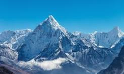

Mount Everest, the highest mountain peak in the world (8,848.86m
above the sea level), is located in Nepal. Mountaineering and other
types of adventure tourism and ecotourism are important attractions
for visitors. The World Heritage Site Lumbini, birthplace of Buddha,
is located in the south of the West region of Nepal (which despite
the name is located in the center of the country) and there are
other important religious pilgrimage sites throughout the country.
The tourist industry is seen as a way to alleviate poverty and
achieve greater social equity in the country. Tourism brings $471
million a year to Nepal. According to statistics of 2025, there
was a growth rate of 2.1%. According to statistics from Nepal
Tourism Board (NTB), a total of 1,197,191 foreign tourists entered
the country in 2019 as compared to 1,173,072 in 2018. The
government of Nepal declared 2011 to be Nepal Tourism Year, and
hoped to attract one million foreign tourists to the country during
that year. The government of Nepal has also declared Lumbini
Tourism Year 2012 to promote Lumbini. The government of Nepal has
also recently declared Visit Nepal 2020 with the aim of bringing in
two million tourists by 2020. Most of tourists visit for short stays.
In 2022, 64.7% of the tourists came to Nepal for holiday vacations,
10.03% came for adventure, such as trekking and mountaineering,
12.87% came for religious visits, and 12.39% for other reasons.
Tourists who come from the USA, UK, France, Spain, India, and Germany
have a main target of activity: mountain climbing. Mt. Everest, Mt.
Ama Dablam, and Mt. Manaslu are the most popular mountains. The
tourism industry of Nepal was affected after the destructive
earthquake in 2015, by the series of earthquakes in 2015. In 2020,
the tourism sector in Nepal collapsed due to the COVID-19 pandemic.
In 2022, tourism income increased by 190% from 2021. The gross
foreign exchange earnings were Nrs 46,756,824 thousand (Around
326,282 thousand US$).
